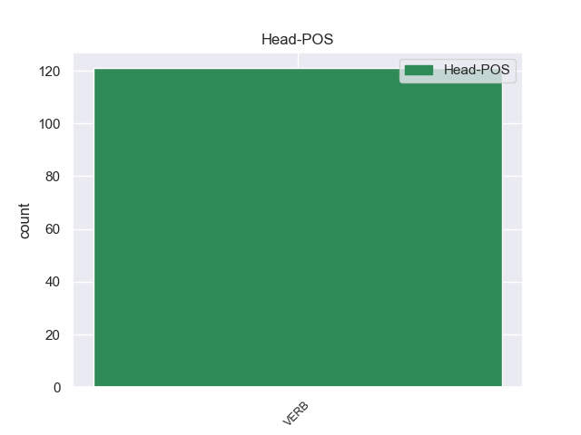
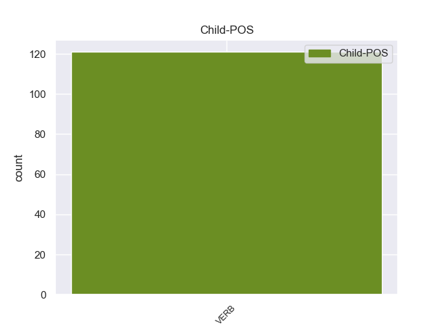

Distribution of features within this leaf



Agreement Rules sorted by frequency.
- When the dependent token is the open clausal complement(xcomp) of the head token, and the dependent token is VERB.
1 Εδώ _ _ _ _ 0 _ _ _
2 και _ _ _ _ 0 _ _ _
3 ενάμισι _ _ _ _ 0 _ _ _
4 χρόνο _ _ _ _ 0 _ _ _
5 κοιτάζουμε _ _ _ _ 0 _ _ _
6 άπραγοι _ _ _ _ 0 _ _ _
7 τον _ _ _ _ 0 _ _ _
8 εντελώς _ _ _ _ 0 _ _ _
9 άνισο _ _ _ _ 0 _ _ _
10 πόλεμο _ _ _ _ 0 _ _ _
11 που _ _ _ _ 0 _ _ _
12 διεξάγουν _ _ _ _ 0 _ _ _
13 αυτοί _ _ _ _ 0 _ _ _
14 οι _ _ _ _ 0 _ _ _
15 δύο _ _ _ _ 0 _ _ _
16 αντίπαλοι _ _ _ _ 0 _ _ _
17 μεταξύ _ _ _ _ 0 _ _ _
18 τους _ _ _ _ 0 _ _ _
19 , _ _ _ _ 0 _ _ _
20 κοιτάζουμε κοιτάζω VERB VERB Aspect=Imp|Mood=Ind|Number=Plur|Person=1|Tense=Pres|VerbForm=Fin|Voice=Act 0 _ _ _
21 τα _ _ _ _ 0 _ _ _
22 τανκς _ _ _ _ 0 _ _ _
23 των _ _ _ _ 0 _ _ _
24 Ισραηλινών _ _ _ _ 0 _ _ _
25 να _ _ _ _ 0 _ _ _
26 καταστρέφουν καταστρέφω VERB VERB Aspect=Imp|Mood=Ind|Number=Plur|Person=3|Tense=Pres|VerbForm=Fin|Voice=Act 20 xcomp _ _
27 σπίτια _ _ _ _ 0 _ _ _
28 και _ _ _ _ 0 _ _ _
29 να _ _ _ _ 0 _ _ _
30 σκοτώνουν _ _ _ _ 0 _ _ _
31 παλαιστίνιους _ _ _ _ 0 _ _ _
32 πολίτες _ _ _ _ 0 _ _ _
33 . _ _ _ _ 0 _ _ _
1 Ωστόσο _ _ _ _ 0 _ _ _
2 , _ _ _ _ 0 _ _ _
3 ο _ _ _ _ 0 _ _ _
4 Εισαγγελέας _ _ _ _ 0 _ _ _
5 Εφετών _ _ _ _ 0 _ _ _
6 θεώρησε _ _ _ _ 0 _ _ _
7 ότι _ _ _ _ 0 _ _ _
8 , _ _ _ _ 0 _ _ _
9 και _ _ _ _ 0 _ _ _
10 εδώ _ _ _ _ 0 _ _ _
11 παραθέτω παραθέτω VERB VERB Aspect=Imp|Mood=Ind|Number=Sing|Person=1|Tense=Pres|VerbForm=Fin|Voice=Act 30 parataxis _ _
12 κατά _ _ _ _ 0 _ _ _
13 λέξη _ _ _ _ 0 _ _ _
14 , _ _ _ _ 0 _ _ _
15 " _ _ _ _ 0 _ _ _
16 αντίθετα _ _ _ _ 0 _ _ _
17 με _ _ _ _ 0 _ _ _
18 την _ _ _ _ 0 _ _ _
19 εκτίμηση _ _ _ _ 0 _ _ _
20 του _ _ _ _ 0 _ _ _
21 άλλου _ _ _ _ 0 _ _ _
22 Εισαγγελέα _ _ _ _ 0 _ _ _
23 , _ _ _ _ 0 _ _ _
24 η _ _ _ _ 0 _ _ _
25 παρούσα _ _ _ _ 0 _ _ _
26 αίτηση _ _ _ _ 0 _ _ _
27 άρσης _ _ _ _ 0 _ _ _
28 της _ _ _ _ 0 _ _ _
29 ασυλίας _ _ _ _ 0 _ _ _
30 δικαιολογεί δικαιολογώ VERB VERB Aspect=Imp|Mood=Ind|Number=Sing|Person=3|Tense=Pres|VerbForm=Fin|Voice=Act 0 _ _ _
31 επιφυλάξεις _ _ _ _ 0 _ _ _
32 " _ _ _ _ 0 _ _ _
33 . _ _ _ _ 0 _ _ _
1 από _ _ _ _ 0 _ _ _
2 τα _ _ _ _ 0 _ _ _
3 δε _ _ _ _ 0 _ _ _
4 έγγραφα _ _ _ _ 0 _ _ _
5 της _ _ _ _ 0 _ _ _
6 υπόθεσης _ _ _ _ 0 _ _ _
7 προκύπτει προκύπτω VERB VERB Aspect=Imp|Mood=Ind|Number=Sing|Person=3|Tense=Pres|VerbForm=Fin|Voice=Act 0 _ _ _
8 ότι _ _ _ _ 0 _ _ _
9 δεν _ _ _ _ 0 _ _ _
10 φαίνεται φαίνομαι VERB VERB Aspect=Imp|Mood=Ind|Number=Sing|Person=3|Tense=Pres|VerbForm=Fin|Voice=Pass 7 csubj _ _
11 να _ _ _ _ 0 _ _ _
12 έχει _ _ _ _ 0 _ _ _
13 ληφθεί _ _ _ _ 0 _ _ _
14 υπόψη _ _ _ _ 0 _ _ _
15 η _ _ _ _ 0 _ _ _
16 σύσταση _ _ _ _ 0 _ _ _
17 να _ _ _ _ 0 _ _ _
18 διαβιβαστεί _ _ _ _ 0 _ _ _
19 η _ _ _ _ 0 _ _ _
20 αίτηση _ _ _ _ 0 _ _ _
21 άρσης _ _ _ _ 0 _ _ _
22 της _ _ _ _ 0 _ _ _
23 ασυλίας _ _ _ _ 0 _ _ _
24 μόνον _ _ _ _ 0 _ _ _
25 επί _ _ _ _ 0 _ _ _
26 τη _ _ _ _ 0 _ _ _
27 βάσει _ _ _ _ 0 _ _ _
28 ακριβέστερου _ _ _ _ 0 _ _ _
29 προσδιορισμού _ _ _ _ 0 _ _ _
30 όσον _ _ _ _ 0 _ _ _
31 αφορά _ _ _ _ 0 _ _ _
32 τους _ _ _ _ 0 _ _ _
33 τόπους _ _ _ _ 0 _ _ _
34 και _ _ _ _ 0 _ _ _
35 τα _ _ _ _ 0 _ _ _
36 πρόσωπα _ _ _ _ 0 _ _ _
37 που _ _ _ _ 0 _ _ _
38 εμπλέκονται _ _ _ _ 0 _ _ _
39 σ _ _ _ _ 0 _ _ _
40 την _ _ _ _ 0 _ _ _
41 υπόθεση _ _ _ _ 0 _ _ _
42 . _ _ _ _ 0 _ _ _
1 Δεν _ _ _ _ 0 _ _ _
2 επιτρέπεται επιτρέπω VERB VERB Aspect=Imp|Mood=Ind|Number=Sing|Person=3|Tense=Pres|VerbForm=Fin|Voice=Pass 0 _ _ _
3 να _ _ _ _ 0 _ _ _
4 κλείνουμε κλείνω VERB VERB Aspect=Imp|Mood=Ind|Number=Plur|Person=1|Tense=Pres|VerbForm=Fin|Voice=Act 2 csubj:pass _ _
5 τα _ _ _ _ 0 _ _ _
6 μάτια _ _ _ _ 0 _ _ _
7 μπροστά _ _ _ _ 0 _ _ _
8 σε _ _ _ _ 0 _ _ _
9 όσα _ _ _ _ 0 _ _ _
10 συμβαίνουν _ _ _ _ 0 _ _ _
11 σ _ _ _ _ 0 _ _ _
12 την _ _ _ _ 0 _ _ _
13 Τσετσενία _ _ _ _ 0 _ _ _
14 απλά _ _ _ _ 0 _ _ _
15 και _ _ _ _ 0 _ _ _
16 μόνο _ _ _ _ 0 _ _ _
17 επειδή _ _ _ _ 0 _ _ _
18 υποστηρίζουμε _ _ _ _ 0 _ _ _
19 ότι _ _ _ _ 0 _ _ _
20 πρέπει _ _ _ _ 0 _ _ _
21 να _ _ _ _ 0 _ _ _
22 καταπολεμήσουμε _ _ _ _ 0 _ _ _
23 την _ _ _ _ 0 _ _ _
24 τρομοκρατία _ _ _ _ 0 _ _ _
25 . _ _ _ _ 0 _ _ _
1 Κύριε _ _ _ _ 0 _ _ _
2 Πρόεδρε _ _ _ _ 0 _ _ _
3 , _ _ _ _ 0 _ _ _
4 οι _ _ _ _ 0 _ _ _
5 υπό _ _ _ _ 0 _ _ _
6 συζήτηση _ _ _ _ 0 _ _ _
7 υποθέσεις _ _ _ _ 0 _ _ _
8 αφορούν αφορώ VERB VERB Aspect=Imp|Mood=Ind|Number=Plur|Person=3|Tense=Pres|VerbForm=Fin|Voice=Act 0 _ _ _
9 πολύ _ _ _ _ 0 _ _ _
10 σοβαρές _ _ _ _ 0 _ _ _
11 κατηγορίες _ _ _ _ 0 _ _ _
12 , _ _ _ _ 0 _ _ _
13 οι _ _ _ _ 0 _ _ _
14 οποίες _ _ _ _ 0 _ _ _
15 βαρύνουν βαραίνω VERB VERB Aspect=Imp|Mood=Ind|Number=Plur|Person=3|Tense=Pres|VerbForm=Fin|Voice=Act 8 acl:relcl _ _
16 δύο _ _ _ _ 0 _ _ _
17 βουλευτές _ _ _ _ 0 _ _ _
18 του _ _ _ _ 0 _ _ _
19 Σώματος _ _ _ _ 0 _ _ _
20 και _ _ _ _ 0 _ _ _
21 αναφέρονται _ _ _ _ 0 _ _ _
22 σ _ _ _ _ 0 _ _ _
23 την _ _ _ _ 0 _ _ _
24 πρώτη _ _ _ _ 0 _ _ _
25 σελίδα _ _ _ _ 0 _ _ _
26 της _ _ _ _ 0 _ _ _
27 αιτιολογικής _ _ _ _ 0 _ _ _
28 έκθεσης _ _ _ _ 0 _ _ _
29 της _ _ _ _ 0 _ _ _
30 έκθεσής _ _ _ _ 0 _ _ _
31 μου _ _ _ _ 0 _ _ _
32 , _ _ _ _ 0 _ _ _
33 σ _ _ _ _ 0 _ _ _
34 την _ _ _ _ 0 _ _ _
35 οποία _ _ _ _ 0 _ _ _
36 συνιστώ _ _ _ _ 0 _ _ _
37 σ _ _ _ _ 0 _ _ _
38 τους _ _ _ _ 0 _ _ _
39 συναδέλφους _ _ _ _ 0 _ _ _
40 να _ _ _ _ 0 _ _ _
41 ρίξουν _ _ _ _ 0 _ _ _
42 μια _ _ _ _ 0 _ _ _
43 ματιά _ _ _ _ 0 _ _ _
44 . _ _ _ _ 0 _ _ _
Disagree Examples:
1 Ο _ _ _ _ 0 _ _ _
2 Αντιπρόεδρος _ _ _ _ 0 _ _ _
3 των _ _ _ _ 0 _ _ _
4 ΗΠΑ _ _ _ _ 0 _ _ _
5 , _ _ _ _ 0 _ _ _
6 Τζο _ _ _ _ 0 _ _ _
7 Μπάιντεν _ _ _ _ 0 _ _ _
8 , _ _ _ _ 0 _ _ _
9 συναντήθηκε _ _ _ _ 0 _ _ _
10 σ _ _ _ _ 0 _ _ _
11 το _ _ _ _ 0 _ _ _
12 Καπιτώλιο _ _ _ _ 0 _ _ _
13 με _ _ _ _ 0 _ _ _
14 τους _ _ _ _ 0 _ _ _
15 Δημοκρατικούς _ _ _ _ 0 _ _ _
16 της _ _ _ _ 0 _ _ _
17 Γερουσίας _ _ _ _ 0 _ _ _
18 αργά _ _ _ _ 0 _ _ _
19 τη _ _ _ _ 0 _ _ _
20 Δευτέρα _ _ _ _ 0 _ _ _
21 το _ _ _ _ 0 _ _ _
22 βράδυ _ _ _ _ 0 _ _ _
23 καθώς _ _ _ _ 0 _ _ _
24 άρχισαν αρχίζω VERB VERB Aspect=Perf|Mood=Ind|Number=Plur|Person=3|Tense=Past|VerbForm=Fin|Voice=Act 0 _ _ _
25 να _ _ _ _ 0 _ _ _
26 διαρρέουν διαρρέω VERB VERB Aspect=Imp|Mood=Ind|Number=Plur|Person=3|Tense=Pres|VerbForm=Fin|Voice=Act 24 xcomp _ _
27 πληροφορίες _ _ _ _ 0 _ _ _
28 για _ _ _ _ 0 _ _ _
29 επικείμενη _ _ _ _ 0 _ _ _
30 συμφωνία _ _ _ _ 0 _ _ _
31 . _ _ _ _ 0 _ _ _
1 Η _ _ _ _ 0 _ _ _
2 Γαλλική _ _ _ _ 0 _ _ _
3 Αστυνομία _ _ _ _ 0 _ _ _
4 προσπάθησε προσπαθώ VERB VERB Aspect=Perf|Mood=Ind|Number=Sing|Person=3|Tense=Past|VerbForm=Fin|Voice=Act 0 _ _ _
5 αρκετές _ _ _ _ 0 _ _ _
6 φορές _ _ _ _ 0 _ _ _
7 να _ _ _ _ 0 _ _ _
8 εισβάλλει εισβάλλω VERB VERB Aspect=Imp|Mood=Ind|Number=Sing|Person=3|Tense=Pres|VerbForm=Fin|Voice=Act 4 xcomp _ _
9 σ _ _ _ _ 0 _ _ _
10 το _ _ _ _ 0 _ _ _
11 σπίτι _ _ _ _ 0 _ _ _
12 του _ _ _ _ 0 _ _ _
13 υπόπτου _ _ _ _ 0 _ _ _
14 , _ _ _ _ 0 _ _ _
15 με _ _ _ _ 0 _ _ _
16 αποτέλεσμα _ _ _ _ 0 _ _ _
17 να _ _ _ _ 0 _ _ _
18 τραυματιστούν _ _ _ _ 0 _ _ _
19 τρεις _ _ _ _ 0 _ _ _
20 αστυνομικοί _ _ _ _ 0 _ _ _
21 . _ _ _ _ 0 _ _ _
1 Σ _ _ _ _ 0 _ _ _
2 το _ _ _ _ 0 _ _ _
3 μεταξύ _ _ _ _ 0 _ _ _
4 , _ _ _ _ 0 _ _ _
5 οι _ _ _ _ 0 _ _ _
6 υπηρεσίες _ _ _ _ 0 _ _ _
7 του _ _ _ _ 0 _ _ _
8 υπουργείου _ _ _ _ 0 _ _ _
9 Υγείας _ _ _ _ 0 _ _ _
10 της _ _ _ _ 0 _ _ _
11 Κύπρου _ _ _ _ 0 _ _ _
12 εντόπισαν _ _ _ _ 0 _ _ _
13 σε _ _ _ _ 0 _ _ _
14 δείγματα _ _ _ _ 0 _ _ _
15 μελιού _ _ _ _ 0 _ _ _
16 ελληνικής _ _ _ _ 0 _ _ _
17 προέλευσης _ _ _ _ 0 _ _ _
18 υπολείμματα _ _ _ _ 0 _ _ _
19 της _ _ _ _ 0 _ _ _
20 ουσίας _ _ _ _ 0 _ _ _
21 1,4 _ _ _ _ 0 _ _ _
22 διχλωροβενζόλιο _ _ _ _ 0 _ _ _
23 και _ _ _ _ 0 _ _ _
24 συνέστησαν συστήνω VERB VERB Aspect=Perf|Mood=Ind|Number=Plur|Person=3|Tense=Past|VerbForm=Fin|Voice=Act 0 _ _ _
25 σ _ _ _ _ 0 _ _ _
26 τους _ _ _ _ 0 _ _ _
27 καταναλωτές _ _ _ _ 0 _ _ _
28 να _ _ _ _ 0 _ _ _
29 αποφεύγουν αποφεύγω VERB VERB Aspect=Imp|Mood=Ind|Number=Plur|Person=3|Tense=Pres|VerbForm=Fin|Voice=Act 24 xcomp _ _
30 συγκεκριμένες _ _ _ _ 0 _ _ _
31 παρτίδες _ _ _ _ 0 _ _ _
32 του _ _ _ _ 0 _ _ _
33 μελιού _ _ _ _ 0 _ _ _
34 " _ _ _ _ 0 _ _ _
35 Attiki _ _ _ _ 0 _ _ _
36 " _ _ _ _ 0 _ _ _
37 με _ _ _ _ 0 _ _ _
38 ημερομηνία _ _ _ _ 0 _ _ _
39 ανάλωσης _ _ _ _ 0 _ _ _
40 πριν _ _ _ _ 0 _ _ _
41 τον _ _ _ _ 0 _ _ _
42 Ιανουάριο_του_2008 _ _ _ _ 0 _ _ _
43 . _ _ _ _ 0 _ _ _
1 Αν _ _ _ _ 0 _ _ _
2 και _ _ _ _ 0 _ _ _
3 οι _ _ _ _ 0 _ _ _
4 εισαγωγές _ _ _ _ 0 _ _ _
5 σκόνης _ _ _ _ 0 _ _ _
6 τσίλι _ _ _ _ 0 _ _ _
7 με _ _ _ _ 0 _ _ _
8 Sudan _ _ _ _ 0 _ _ _
9 - _ _ _ _ 0 _ _ _
10 1 _ _ _ _ 0 _ _ _
11 έχουν _ _ _ _ 0 _ _ _
12 απαγορευθεί _ _ _ _ 0 _ _ _
13 σε _ _ _ _ 0 _ _ _
14 όλη _ _ _ _ 0 _ _ _
15 την _ _ _ _ 0 _ _ _
16 Ευρωπαϊκή _ _ _ _ 0 _ _ _
17 Ένωση _ _ _ _ 0 _ _ _
18 από _ _ _ _ 0 _ _ _
19 τον _ _ _ _ 0 _ _ _
20 Ιούλιο_του_2003 _ _ _ _ 0 _ _ _
21 , _ _ _ _ 0 _ _ _
22 πιστεύεται πιστεύεται VERB VERB Aspect=Imp|Mood=Ind|Number=Sing|Person=3|Tense=Pres|VerbForm=Fin|Voice=Pass 0 _ _ _
23 πως _ _ _ _ 0 _ _ _
24 η _ _ _ _ 0 _ _ _
25 παρτίδα _ _ _ _ 0 _ _ _
26 που _ _ _ _ 0 _ _ _
27 δημιούργησε _ _ _ _ 0 _ _ _
28 το _ _ _ _ 0 _ _ _
29 πρόβλημα _ _ _ _ 0 _ _ _
30 εισήχθη εισάγω VERB VERB Aspect=Perf|Mood=Ind|Number=Sing|Person=3|Tense=Past|VerbForm=Fin|Voice=Pass 22 csubj:pass _ _
31 πριν _ _ _ _ 0 _ _ _
32 από _ _ _ _ 0 _ _ _
33 αυτήν _ _ _ _ 0 _ _ _
34 την _ _ _ _ 0 _ _ _
35 ημερομηνία _ _ _ _ 0 _ _ _
36 . _ _ _ _ 0 _ _ _
1 Ο _ _ _ _ 0 _ _ _
2 γιος _ _ _ _ 0 _ _ _
3 της _ _ _ _ 0 _ _ _
4 , _ _ _ _ 0 _ _ _
5 πρίγκηπας _ _ _ _ 0 _ _ _
6 Γουλιέλμος _ _ _ _ 0 _ _ _
7 - _ _ _ _ 0 _ _ _
8 Αλέξανδρος _ _ _ _ 0 _ _ _
9 - _ _ _ _ 0 _ _ _
10 τώρα _ _ _ _ 0 _ _ _
11 θα _ _ _ _ 0 _ _ _
12 είναι _ _ _ _ 0 _ _ _
13 γνωστός _ _ _ _ 0 _ _ _
14 ως _ _ _ _ 0 _ _ _
15 βασιλιάς _ _ _ _ 0 _ _ _
16 Γουλιέλμος _ _ _ _ 0 _ _ _
17 Δ' _ _ _ _ 0 _ _ _
18 - _ _ _ _ 0 _ _ _
19 ήταν _ _ _ _ 0 _ _ _
20 γνωστός _ _ _ _ 0 _ _ _
21 για _ _ _ _ 0 _ _ _
22 τα _ _ _ _ 0 _ _ _
23 ερωτικά _ _ _ _ 0 _ _ _
24 του _ _ _ _ 0 _ _ _
25 σκάνδαλα _ _ _ _ 0 _ _ _
26 , _ _ _ _ 0 _ _ _
27 αν _ _ _ _ 0 _ _ _
28 και _ _ _ _ 0 _ _ _
29 τη _ _ _ _ 0 _ _ _
30 τελευταία _ _ _ _ 0 _ _ _
31 δεκαετία _ _ _ _ 0 _ _ _
32 σταμάτησε σταματώ VERB VERB Aspect=Perf|Mood=Ind|Number=Sing|Person=3|Tense=Past|VerbForm=Fin|Voice=Act 0 _ _ _
33 να _ _ _ _ 0 _ _ _
34 μπλέκει μπλέκω VERB VERB Aspect=Imp|Mood=Ind|Number=Sing|Person=3|Tense=Pres|VerbForm=Fin|Voice=Act 32 xcomp _ _
35 σε _ _ _ _ 0 _ _ _
36 σκάνδαλα _ _ _ _ 0 _ _ _
37 και _ _ _ _ 0 _ _ _
38 ανέλαβε _ _ _ _ 0 _ _ _
39 την _ _ _ _ 0 _ _ _
40 προεδρεία _ _ _ _ 0 _ _ _
41 της _ _ _ _ 0 _ _ _
42 Επιτροπής _ _ _ _ 0 _ _ _
43 του _ _ _ _ 0 _ _ _
44 ΟΗΕ _ _ _ _ 0 _ _ _
45 για _ _ _ _ 0 _ _ _
46 το _ _ _ _ 0 _ _ _
47 Νερό _ _ _ _ 0 _ _ _
48 , _ _ _ _ 0 _ _ _
49 καθώς _ _ _ _ 0 _ _ _
50 επίσης _ _ _ _ 0 _ _ _
51 συνεργάζεται _ _ _ _ 0 _ _ _
52 με _ _ _ _ 0 _ _ _
53 τη _ _ _ _ 0 _ _ _
54 Διεθνή _ _ _ _ 0 _ _ _
55 Ολυμπιακή _ _ _ _ 0 _ _ _
56 Επιτροπή _ _ _ _ 0 _ _ _
57 . _ _ _ _ 0 _ _ _